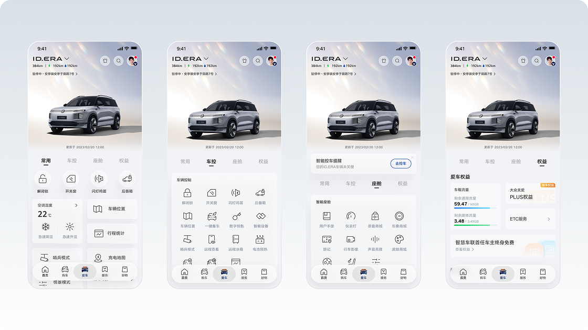
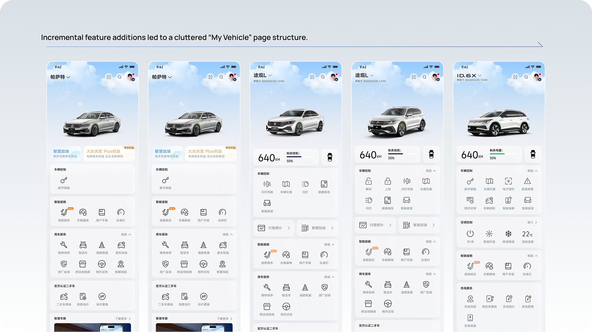
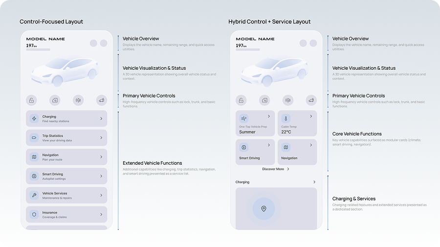
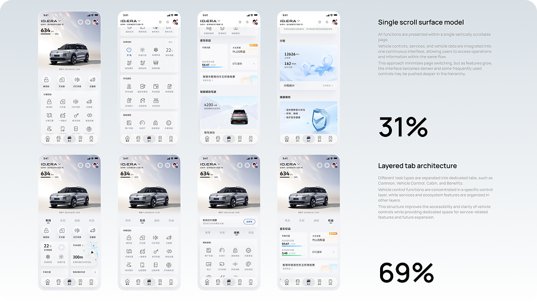
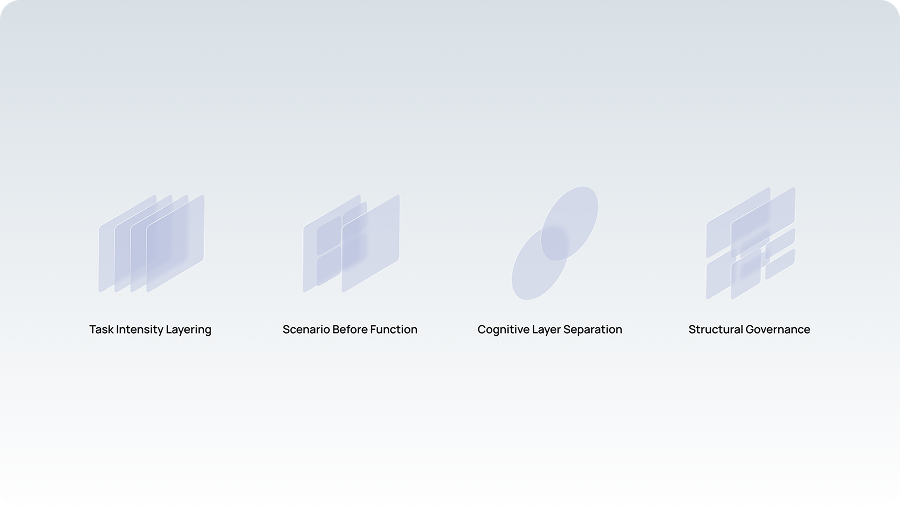
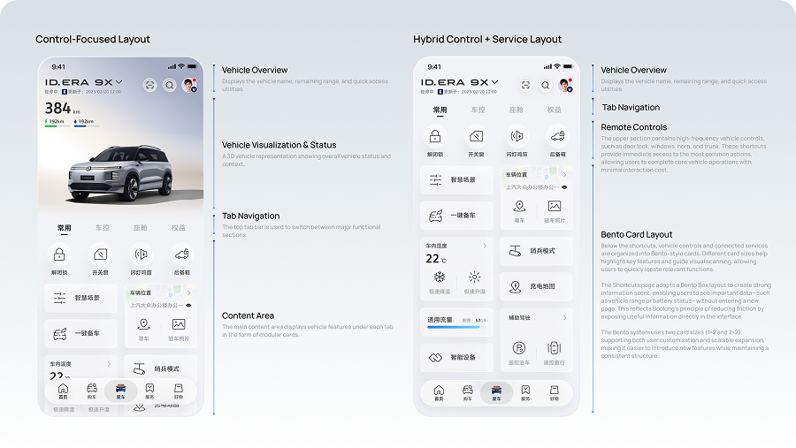
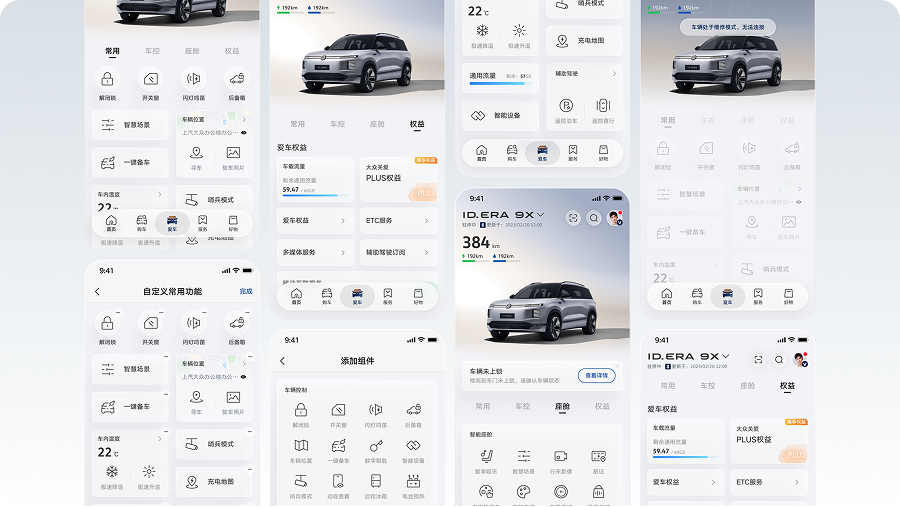

Redesigning the vehicle dashboard to improve control efficiency and feature discoverability.

The legacy vehicle control app had accumulated numerous features across product generations, resulting in an outdated structure and fragmented experience. As the UI/UX lead for the vehicle control domain, I was responsible for restructuring the information architecture, implementing UI within the global design system, defining interaction flows for key vehicle functions, and coordinating delivery with internal engineering teams and external vendors.
Legacy Issues
Over multiple vehicle generations, new features were layered onto an outdated structure, creating cluttered layouts and weak hierarchy. The interface struggled to support efficient navigation on mobile.

Cross-functional Priorities
Service teams required prominent placement to drive revenue, while core vehicle controls demanded direct and unobstructed usability.
User Base Transition
Previous vehicles mainly served pragmatic users focused on a few core controls. The new lineup targeted younger users with stronger exploratory behavior.
Method 1: Data Baseline & The Core Conflict
Telemetry data revealed a strong long-tail usage pattern, where a small set of vehicle controls dominated interaction and were often operated with near muscle-memory efficiency. A market scan of leading EV apps showed two common IA tendencies. One approach integrates vehicle controls and services within a single scroll surface to balance multiple feature categories; however, this often requires users to navigate through several layers before reaching frequently used controls. The other approach separates vehicle controls and services into different information layers, emphasizing the operational nature of the vehicle interface. While this improves control efficiency, it can fragment closely related services by distributing them across other parts of the app.
These patterns reveal a fundamental tension: within a single framework, control efficiency and service ecosystem exposure compete for structural priority.

Method 2: Architecture Exploration & Decision
To resolve this structural conflict, I proposed a layered tab architecture that separates different task intensities through distinct entry points. This structure preserves the efficiency and focus required for core vehicle controls while also accommodating service exposure and scenario-based usage needs.
Based on competitive analysis, I also abstracted the prevailing industry pattern into a single scroll surface model. Prototypes were created for both models and evaluated through user clinics. The results showed that the tab architecture provided clearer navigation for high-frequency tasks while maintaining contextual continuity during exploratory browsing, leading to the final decision to adopt the layered tab architecture.

Principle 1 – Task Intensity Layering
Tasks with different intensity should not share the same surface. High-frequency controls require a stable and immediate layer, while exploratory features should exist in expandable layers.
Principle 2 – Scenario Before Function
Charging is a continuous user scenario, not just a feature. It should have a dedicated entry point rather than being embedded within general vehicle controls.
Principle 3 – Cognitive Layer Separation
The structure must support both quick-access users focused on core controls and exploratory users navigating the full feature set.
Principle 4 – Structural Governance
Internal priority conflicts should be resolved through layered and modular structures, rather than constant feature ranking, enabling long-term scalability.

A Layered Architecture for Evolving User Behaviors
Through analysis of behavioral signals, user maturity distribution, and competitive structures, the project ultimately shifted from a single-scroll model to a layered information architecture. This structure distributes features with different task intensities and cognitive depth across separate layers, avoiding zero-sum prioritization within a single interface. As a result, it improves efficiency for high-frequency actions while providing stable entry points for deeper feature exploration.
Architecture Outcome
The final homepage adopts a layered information architecture, separating functions by task intensity and exploration depth.
Shortcut: A quick-access layer for high-frequency controls such as door lock, climate, and battery status, enabling fast, goal-driven actions.
Vehicle Control: A complete index of vehicle functions, ensuring all system capabilities remain discoverable for deeper operations.
Charging: A dedicated layer for the charging journey, supporting tasks such as scheduling, status monitoring, and energy management.
Services: A space for subscriptions, after-sales services, and future ecosystem features, keeping commercial content separate from core controls.

System Capabilities
Beyond structural layering, the system introduces customizable shortcuts to improve adaptability. The Shortcut layer allows users to personalize their most frequently used controls, enabling stable entry points based on individual habits rather than relying on default prioritization. This flexibility helps the interface adapt to different levels of user maturity and usage patterns.

This project restructured the My Vehicle experience by shifting from a single, overloaded interface to a layered information architecture. By separating high-frequency controls, scenario-based tasks, and service exploration into distinct layers, the design improves operational efficiency while preserving discoverability for a growing ecosystem. The result is a structure that supports both goal-driven users and exploratory behaviors, providing a scalable foundation as vehicle capabilities continue to expand.
While clinic testing showed a clear preference for the horizontal layered structure, the interaction still introduces a small learning curve compared with the previous single-scroll model. Some users may initially overlook secondary layers or require time to understand the navigation logic. Future iterations should focus on improving discoverability and onboarding, ensuring that users can easily understand the layered structure while maintaining the efficiency of high-frequency controls.